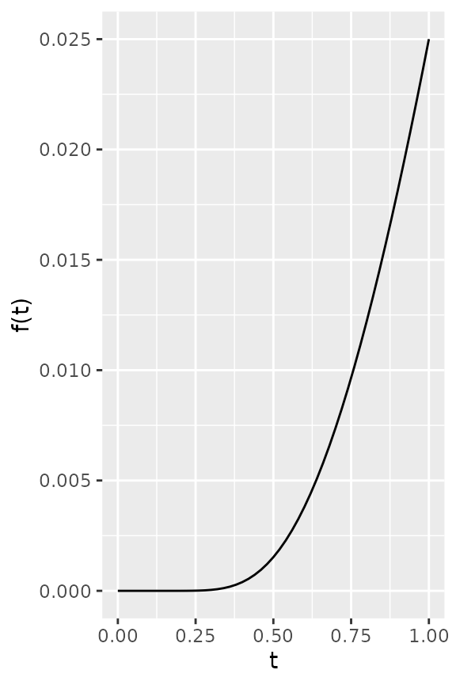
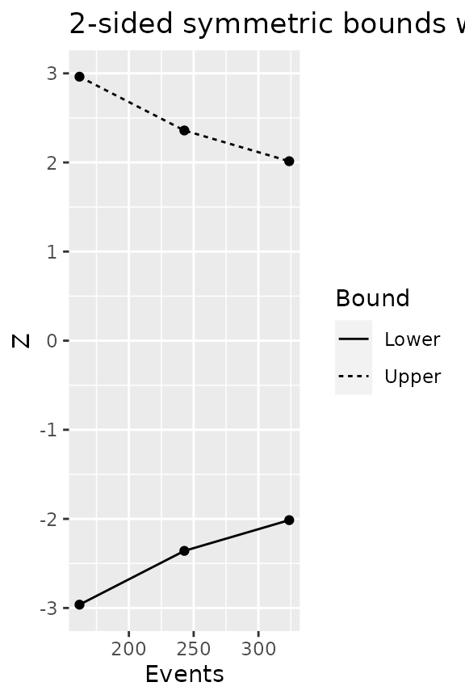

Quick Start for NPH Sample Size and Power
24 August, 2022
Source:vignettes/story_quick_start.Rmd
story_quick_start.RmdOverview
We provide simple examples for use of the gsdmvn package for deriving fixed and group sequential designs under non-proportional hazards. The piecewise model for enrollment, failure rates, dropout rates and changing hazard ratio over time allow great flexibility in design assumptions. Users are encouraged to suggest features that would be of immediate and long-term interest to add.
Topics included here are:
- Packages required and how they are used.
- Specifying enrollment rates.
- Specifying failure and dropout rates with possibly changing hazard ratio over time.
- Deriving a fixed design with no interim analysis.
- Simple boundary specification for group sequential design.
- Deriving a group sequential design under non-proportional hazards.
- Displaying design properties.
- Design properties under alternate assumptions.
- Differences from gsDesign.
- Future enhancement priorities.
All of these items are discussed briefly to enable a quick start for early adopters while also suggesting the ultimate possibilities that the software enables. Finally, while the final section provides current enhancement priorities, potential topic-related enhancements are discussed throughout the document.
Packages Used
- The gsdmvn package is used here to implement group sequential distribution theory under non-proportional hazards and to derive a wide variety of boundary types for group sequential designs.
- The gsDesign package is used as a check for results under proportional hazards as well as a source from deriving bounds using spending functions.
- The gsDesign2 package provides computations to compute expected event accumulation and average hazard ratio over time; these are key inputs to the group sequential distribution parameters.
- The simtrial package is used to verify design properties using simulation.
The gsdmvn package will likely will likely be incorporated eventually into the gsDesign2 package, resulting in a fully featured design package. However, features and implementation in gsdmvn will be allowed to change as needed during the agile rapid development phase.
Enrollment Rates
Piecewise constant enrollment rates are input in a tabular format. Here we assume enrollment will ramp-up with \(25\%\), \(50\%\), and \(75\%\) of the final enrollment rate for \(2\) months each followed by a steady state \(100\%\) enrollment for another \(6\) months. The rates will be increased later to power the design appropriately. However, the fixed enrollment rate periods will remain unchanged.
enrollRates <- tibble(
Stratum = "All",
duration = c(2, 2, 2, 6),
rate = (1:4) / 4)
enrollRates %>% gt()| Stratum | duration | rate |
|---|---|---|
| All | 2 | 0.25 |
| All | 2 | 0.50 |
| All | 2 | 0.75 |
| All | 6 | 1.00 |
Failure and Dropout Rates
Constant failure and dropout rates are specified by study period and stratum; we consider a single stratum here. A hazard ratio is provided for treatment/control hazard rate for each period and stratum. The dropout rate for each period is assumed the same for each treatment group; this restriction could be eliminated in a future version, if needed. Generally, we take advantage of the identity for an exponential distribution with median \(m\), the corresponding failure rate \(\lambda\) is
\[\lambda = \log(2) / m.\]
We consider a control group exponential time-to-event with a \(12\) month median. We assume a hazard ratio of \(1\) for \(4\) months, followed by a hazard ratio of \(0.6\) thereafter. Finally, we assume a low \(0.001\) exponential dropout rate for both treatment groups.
medianSurv <- 12
failRates <- tibble::tibble(
Stratum = "All",
duration = c(4, Inf),
failRate = log(2) / medianSurv,
hr = c(1, .6),
dropoutRate = .001
)
failRates %>% gt()| Stratum | duration | failRate | hr | dropoutRate |
|---|---|---|---|---|
| All | 4 | 0.05776227 | 1.0 | 0.001 |
| All | Inf | 0.05776227 | 0.6 | 0.001 |
Fixed Design
Under the above enrollment, failure and dropout rate assumptions we now derive sample size for a trial targeted to complete in 36 months with no interim analysis, \(90\%\) power and \(2.5\%\) Type I error. The parameter upar = qnorm(1 - .025) in this case is the upper bound for the single analysis, while the parameter beta = 0.1 is the Type II error (1 - power). The information fraction IF = 1 at the final analysis is just a statement that the analysis is done with \(100\%\) of the design planned endpoints. Finally, lpar = -Inf just means there is no futility bound for the design. The design can be derived under these assumptions.
# Type I error
alpha <- .025
design <- gs_design_ahr(
enrollRates = enrollRates,
failRates = failRates,
alpha = alpha,
beta = .1, # Type II error = 1 - power
analysisTimes = 36, # Planned trial duration
IF = 1, # Single analysis at information-fraction of 1
upar = qnorm(1 - alpha), # Final analysis bound
lpar = -Inf # No futility bound
)There are four components to the resulting design.
names(design)
#> [1] "enrollRates" "failRates" "bounds" "analysis"First, the enrollment rates for each period have been increased proportionately to size the trial for the desired properties; the duration for each enrollment rate has not changed.
| Stratum | duration | rate |
|---|---|---|
| All | 2 | 12.04701 |
| All | 2 | 24.09401 |
| All | 2 | 36.14102 |
| All | 6 | 48.18802 |
Second, the output failRates are the same as input.
Third, for the output bounds, there are commonly 7 columns.
-
Analysisis the index of the analysis. For the fixed design, we only have Analysis = 1. -
Boundspecify the type of the bounds, either upper bound or lower bound. In this example, we do not have lower bound since there is not a futility bound. -
Probability. The power is in theProbabilitycolumn on the row with theUpperbound andH1hypothesis. -
hypothesisspecifies whether it is under the null or alternative hypothesis. -
Zis the Z-statistics. In this example, the output bounds are just an upper bound of \(\Phi^{-1}(1-\alpha)\) and a lower bound of \(-\infty\). -
~HR at boundis the approximated hazard ratio at the bound, which is calculated asexp(-Z / sqrt(info0)), whereinfo0is the statistical information under H0. -
Nominal pis calculated aspnorm(-Z).
| Analysis | Bound | Probability | Probability0 | Z | ~HR at bound | Nominal p |
|---|---|---|---|---|---|---|
| 1 | Upper | 0.9 | 0.025 | 1.959964 | 0.8018981 | 0.025 |
Fourth, for the output analysis, it summarize each analysis per hypothesis. And there are 9 columns.
-
Analysisis the index of the analysis. For the fixed design, we only have Analysis = 1. -
Timeis the targeted time of the analysis. -
Nis the sample size of the anslysis. -
Eventsis the number of events of the analysis. -
AHRis average hazard ratio used to compute the sample size based on the Schoenfeld (1981a) approximation is inAHR. -
thetais the natural parameter for the effect size as outlined in Jennison and Turnbull (1999) and elsewhere in this package; in this case it is-log(AHR). -
infois the statistical information at each analysis under the alternate (if the row ofhypothesisis H1) and null hypothesis (if the row ofhypothesisis H0), respectively. -
IFis the information fraction. -
hypothesisspecifies whether it is under the null or alternative hypothesis.
| Analysis | Time | N | Events | AHR | theta | info | info0 | IF |
|---|---|---|---|---|---|---|---|---|
| 1 | 36 | 433.6922 | 315.2547 | 0.6934128 | 0.3661298 | 77.73302 | 78.81367 | 1 |
We note that the targeted Events are approximately what would be proposed with the Schoenfeld (1981b) formula:
gsDesign::nEvents(hr = design$analysis$AHR)
#> [1] 313.535The difference is that gs_design_ahr() accounts for both a null and alternate hypothesis variance estimate for theta = log(AHR) at each analysis to yield a slightly more conservative event target due to slower accumulation of statistical information under the alternate hypothesis. See Lachin (2009) for this approach for fixed design; to our knowledge, this has not previously been extended to group sequential design. Due to simplicity, there may be reasons to allow approaches with a single variance estimate in future releases.
Finally, we note that with a shorter trial duration of \(30\) months, we need both a larger sample size and targeted number of events due to a larger expected AHR at the time of analysis:
gs_design_ahr(
enrollRates = enrollRates,
failRates = failRates,
alpha = alpha,
beta = .1, # Type II error = 1 - power
analysisTimes = 30, # Planned trial duration, which is different from the previous design 36->30
IF = 1, # single analysis at information-fraction of 1
upar = qnorm(1 - alpha), # Final analysis bound
lpar = -Inf # No futility bound
)$analysis %>%
gt() %>%
fmt_number(columns = 5:7, decimals = 4)| Analysis | Time | N | Events | AHR | theta | info | info0 | IF |
|---|---|---|---|---|---|---|---|---|
| 1 | 30 | 534.729 | 347.5292 | 0.7054 | 0.3490 | 85.3531 | 86.8823 | 1 |
Group Sequential Design
We will not go into detail for group sequential designs here. In brief, however, a sequence of tests \(Z_1, Z_2,\ldots, Z_K\) that follow a multivariate normal distribution are performed to test if a new treatment is better than control (Jennison and Turnbull (1999)). We assume \(Z_k > 0\) is favorable for the experimental treatment. Generally Type I error for this set of tests will be controlled under the null hypothesis of no treatment difference by a sequence of bounds \(b_1, b_2,\ldots,b_K\) such that for a chosen Type I error \(\alpha > 0\) we have
\[ \alpha = 1 - P_0(\cap_{k=1}^K Z_k < b_k) \] Where \(P_0()\) refers to a probability under the null hypothesis. This is referred to as a non-binding bound since it is assumed the trial will not be stopped early for futility if some \(Z_k\) is small.
Simple Efficacy Bound Definition
Lan and DeMets (1983) developed the spending function method for deriving group sequential bounds. This involves use of a non-decreasing spending function \(f(t)\) for \(t\ge 0\) where \(f(0)=0\) and \(f(t)=\alpha\) for \(t \ge 1\). Suppose for \(K>0\) analyses are performed when proportion \(t_1< t_2 <\ldots t_K=1\) of some planned statistical information (e.g., proportion of planned events for a time-to-event endpoint trial for proportion of observations for a binomial or normal endpoint). Bounds through the first \(k\) analyses \(1\le k\le K\) are recursively defined by the spending function and the multivariate normal distribution to satisfy
\[ f(t_k) = 1 - P_0(\cap_{j=1}^k Z_j < b_j). \] For this quick start, we will only illustrate this type of efficacy bound.
Perhaps the most common spending function for this approach is the Lan and DeMets (1983) approximation to the O’Brien-Fleming bound with
\[ f(t) = 2-2\Phi\left(\frac{\Phi^{-1}(1-\alpha/2)}{t^{1/2}}\right). \]

Suppose \(K=3\) and \(t_1=0.5\), \(t_2 = 0.75\), \(t_3 = 1\). We can define bounds with the gsDesign group sequential design function gsDesign() and Lan-DeMets O’Brien-Fleming spending function for \(\alpha = 0.025\).
gsDesign(
k = 3,
timing = c(0.5, 0.75, 1),
test.type = 1,
alpha = 0.025,
sfu = gsDesign::sfLDOF)$upper$bound
#> [1] 2.962588 2.359018 2.014084Now we can define a one-sided group sequential design under the same enrollment, failure and dropout assumptions used previously.
design1s <- gs_design_ahr(
enrollRates = enrollRates,
failRates = failRates,
analysisTimes = 36, # Trial duration
upper = gs_spending_bound,
upar = list(sf = gsDesign::sfLDOF, total_spend = 0.025),
lower = gs_b,
lpar = rep(-Inf, 3), # No futility bound
IF = c(.5, .75, 1)
)Bounds at the 3 analyses are as follows. Note that expected sample size at time of each data cutoff for analysis is also here in N. We filter on the upper bound so that lower bounds with Z = -Inf are not shown.
| Bound summary for AHR design | ||||
|---|---|---|---|---|
| AHR approximations of ~HR at bound | ||||
| Bound | Nominal p1 | ~HR at bound2 | Cumulative boundary crossing probability | |
| Alternate hypothesis | Null hypothesis | |||
| Analysis: 1 Time: 16.3 N: 445.4 Events: 161.9 AHR: 0.8 IF: 0.5 | ||||
| Efficacy | 0.0015 | 0.6277 | 0.0620 | 0.0017 |
| Analysis: 2 Time: 23.9 N: 445.4 Events: 242.8 AHR: 0.73 IF: 0.74 | ||||
| Efficacy | 0.0092 | 0.7388 | 0.5401 | 0.0098 |
| Analysis: 3 Time: 36 N: 445.4 Events: 323.7 AHR: 0.69 IF: 1 | ||||
| Efficacy | 0.0220 | 0.7994 | 0.9000 | 0.0252 |
| 1 One-sided p-value for experimental vs control treatment. Values < 0.5 favor experimental, > 0.5 favor control. | ||||
| 2 Approximate hazard ratio to cross bound. | ||||
Two-Sided Testing
We will consider both symmetric and asymmetric 2-sided designs.
Symmetric 2-sided bounds
For a symmetric design, we can again define a bound using gsDesign::gsDesign(). For this example, the bound is identical to b above to the digits calculated.
gsDesign::gsDesign(
test.type = 2,
sfu = sfLDOF,
alpha = 0.025,
timing = c(.5, .75, 1))$upper$bound
#> [1] 2.962588 2.359018 2.014084Now we replicate with gs_design_ahr():
design2ss <- gs_design_ahr(
enrollRates = enrollRates,
failRates = failRates,
analysisTimes = 36, # Trial duration
IF = c(.5, .75, 1), # Information fraction at analyses
upper = gs_spending_bound,
upar = list(sf = gsDesign::sfLDOF, total_spend = 0.025),
lower = gs_spending_bound,
lpar = list(sf = gsDesign::sfLDOF, total_spend = 0.025),
h1_spending = FALSE
)Design bounds are confirmed with:
| Bound summary for AHR design | ||||
|---|---|---|---|---|
| AHR approximations of ~HR at bound | ||||
| Bound | Nominal p1 | ~HR at bound2 | Cumulative boundary crossing probability | |
| Alternate hypothesis | Null hypothesis | |||
| Analysis: 1 Time: 16.3 N: 445.4 Events: 161.9 AHR: 0.8 IF: 0.5 | ||||
| Futility | 0.9985 | 1.5931 | 0.0000 | 0.0017 |
| Efficacy | 0.0015 | 0.6277 | 0.0620 | 0.0017 |
| Analysis: 2 Time: 23.9 N: 445.4 Events: 242.8 AHR: 0.73 IF: 0.74 | ||||
| Futility | 0.9908 | 1.3536 | 0.0000 | 0.0098 |
| Efficacy | 0.0092 | 0.7388 | 0.5401 | 0.0098 |
| Analysis: 3 Time: 36 N: 445.4 Events: 323.7 AHR: 0.69 IF: 1 | ||||
| Futility | 0.9780 | 1.2509 | 0.0000 | 0.0252 |
| Efficacy | 0.0220 | 0.7994 | 0.9000 | 0.0252 |
| 1 One-sided p-value for experimental vs control treatment. Values < 0.5 favor experimental, > 0.5 favor control. | ||||
| 2 Approximate hazard ratio to cross bound. | ||||
The bounds can be plotted easily:
ggplot(
data = design2ss$analysis %>% left_join(design2ss$bounds),
aes(x = Events, y = Z, group = Bound)) +
geom_line(aes(linetype = Bound)) +
geom_point() +
ggtitle("2-sided symmetric bounds with O'Brien-Fleming-like spending")
#> Joining, by = "Analysis"
Asymmetric 2-sided bounds
Asymmetric 2-sided designs are more common than symmetric since the objectives of the two bounds tend to be different. There is often caution to analyze early for efficacy or to use other than a conservative bound; both of these principles have been used with the example designs so far. Stopping when there is a lack of benefit for experimental treatment over control or for an overt indication of an unfavorable trend generally might be examined early and bounds be less stringent. We will add an early futility analysis where if there is a nominal 1-sided p-value of \(0.05\) in the wrong direction (\(Z=\Phi^{-1}(0.05)\) after 30% or \(50\%\) of events have accrued. This might be considered a disaster check. After this point in time, there may not be a perceived need for further futility analysis. For efficacy, we add an infinite bound at this first interim analysis.
gs_prob <- function(theta, upper=gs_b, lower=gs_b, upar, lpar, info, r = 18){
# deal with R cmd check messages
Z <- h <- NULL
K <- length(info)
Zupper <- upper(upar, info)
Zlower <- lower(lpar, info)
if (length(theta) == 1) theta <- rep(theta, K)
upperProb <- rep(NA, K)
lowerProb <- rep(NA, K)
for(k in seq_along(info)){
if(k==1){
upperProb[1] <- if(Zupper[1] < Inf) {pnorm(Zupper[1], mean = sqrt(info[1]) * theta[1], lower.tail = FALSE)}else{0}
lowerProb[1] <- if(Zlower[1] > -Inf){pnorm(Zlower[1], mean = sqrt(info[1]) * theta[1])}else{0}
g <- h1(r = r, theta = theta[1], I = info[1], a = Zlower[1], b = Zupper[1])
}else{
# Cross upper bound
upperProb[k] <- if(Zupper[k]< Inf){
hupdate(r = r, theta = theta[k], I = info[k], a = Zupper[k], b = Inf,
thetam1 = theta[k - 1], Im1 = info[k - 1], gm1 = g) %>%
summarise(sum(h)) %>% as.numeric()
}else{0}
# Cross lower bound
lowerProb[k] <- if(Zlower[k] > -Inf){
hupdate(r = r, theta = theta[k], I = info[k], a = -Inf, b = Zlower[k],
thetam1 = theta[k - 1], Im1 = info[k - 1], gm1 = g) %>%
summarise(sum(h)) %>% as.numeric()
}else{0}
# if k < K, update numerical integration for next analy
if (k < K) g <- hupdate(r = r, theta = theta[k], I = info[k], a = Zlower[k], b = Zupper[k],
thetam1 = theta[k - 1], Im1 = info[k - 1], gm1 = g)
}
}
return(tibble::tibble(
Analysis = rep(1:K, 2),
Bound = c(rep("Upper", K), rep("Lower", K)),
Z= c(Zupper, Zlower),
Probability = c(cumsum(upperProb),
cumsum(lowerProb)),
theta = rep(theta, 2),
info = rep(info, 2)) # %>% filter(abs(Z) < Inf)
)
}
gs_design_nph <- function(enrollRates = tibble(Stratum="All",
duration=c(2,2,10),
rate=c(3,6,9)),
failRates = tibble(Stratum="All",
duration=c(3,100),
failRate=log(2)/c(9,18),
hr=c(.9,.6),
dropoutRate=rep(.001,2)),
ratio = 1, # NOT YET IMPLEMENTED
alpha = 0.025, # One-sided Type I error
beta = 0.1, # NULL if enrollment is not adapted
analysisTimes = 30, # CURRENTLY GIVES ONLY FINAL CALENDAR TIME OF TRIAL
IF = c(.25, .75, 1), # relative information fraction timing (vector, if not NULL)
upper = gs_b,
# Default is Lan-DeMets approximation of
upar = gsDesign::gsDesign(k=3, test.type=1, n.I=c(.25, .75, 1), maxn.IPlan = 1,
sfu=sfLDOF, sfupar = NULL)$upper$bound,
lower = gs_b,
lpar = c(qnorm(.1), rep(-Inf, length(IF) - 1)),
r = 18
){
errbeta <- function(x = 1, info, theta, Zupper, Zlower, upar, lpar, beta){
1 - beta - max((gs_prob(theta = theta, upper = Zupper, lower = Zlower, upar = upar, lpar = lpar,
info = x * info, r = r) %>% filter(Bound == "Upper"))$Probability)
}
avehr <- AHR(enrollRates = enrollRates,
failRates = failRates,
totalDuration = analysisTimes,
ratio = ratio)
K <- max(length(IF), length(analysisTimes))
finalEvents <- max(avehr$Events)
if (is.null(IF)){
avehr$IF <- avehr$Events/finalEvents
}else{
avehr <- NULL
for(i in seq_along(IF)){
avehr <- rbind(avehr,
tEvents(enrollRates = enrollRates,
failRates = failRates,
ratio = ratio,
targetEvents = IF[i] * finalEvents)
)
}
avehr$IF <- IF
}
targ <- (qnorm(alpha) + qnorm(beta))^2 / log(avehr$AHR[nrow(avehr)])^2 * (1 + ratio)^2 / ratio
interval <- c(.9, 1.5) * targ / finalEvents
# Now we can solve for the inflation factor for the enrollment rate to achieve the desired power
res <- try(
uniroot(errbeta,
interval = interval,
theta = -log(avehr$AHR),
Zupper = upper,
Zlower = lower,
upar = upar,
lpar = lpar,
info = avehr$info,
beta = beta,
tol = .0001
)
)
if(inherits(res,"try-error")){stop("gs_design_nph(): Sample size solution not found")}
enrollRates = enrollRates %>% mutate(rate = rate * res$root)
avehr <- AHR(enrollRates, failRates = failRates, totalDuration = avehr$Time) %>%
mutate(Analysis = 1:n())
N <- cumsum(enrollRates$rate * enrollRates$duration) %>% tail(1)
# Once eAccrual is fixed, should not need pmin in the following
avehr$N <- pmin(N, eAccrual(avehr$Time, enrollRates))
bounds <- gs_prob(theta = -log(avehr$AHR),
upper = upper,
lower = lower,
upar = upar,
lpar = lpar,
info = avehr$info
)
return(list(enrollRates=enrollRates %>% mutate(N=cumsum(duration * rate)),
failRates=failRates,
bounds = bounds %>% left_join(avehr %>% select(-info), by="Analysis"))
)
}
b2sa <- c(Inf,
gsDesign(k = 3,
timing = c(0.5, 0.75, 1),
test.type = 1,
alpha = 0.025,
sfu = gsDesign::sfLDOF)$upper$bound) # Same efficacy bound as before
a2sa <- c(rep(qnorm(.05), 2), rep(-Inf, 2)) # Single futility analysis bound
try(
design2sa <- gs_design_nph(
enrollRates = enrollRates,
failRates = failRates,
analysisTimes = 36, # Trial duration
upper = gs_b,
upar = b2sa, # Same efficacy bound as before
lower = gs_b,
lpar = a2sa, # Asymmetric 2-sided bound
IF = c(.3, .5, .75, 1)
)
)
#> Error in if (Zupper[1] < Inf) { : missing value where TRUE/FALSE needed
#> Error in gs_design_nph(enrollRates = enrollRates, failRates = failRates, :
#> gs_design_nph(): Sample size solution not foundWe now have a slightly larger sample size to account for the possibility of an early futility stop.
Bounds are now:
We see that there does not need to be a (finite) stopping rule for each bound at each analysis. That is, there is a futility bound only at the first 2 analyses and an efficacy bound only for the last 3 analyses. We still have the targeted power. The efficacy bound has not changed from our first design. The reason for not changing it is to address regulator concerns that such bounds are not always stopped for. However, if the bound is obeyed, the Type I error can be seen to be slightly reduced as follows. This price is generally acceptable for regulatory acceptance and operational flexibility that is enabled by controlling Type I error even if the futility bound is not obeyed.
events <- (design2sa$bounds %>% filter(Bound == "Upper"))$Events
gs_power_nph(
enrollRates = design1s$enrollRates,
failRates = design2sa$failRates %>% mutate(hr = 1),
upar = b2sa,
lpar = a2sa,
events = events,
maxEvents = max(events)
) %>%
# filter eliminates bounds that are infinite
filter(abs(Z) < Inf) %>%
gt() %>%
fmt_number(columns = 3:10, decimals = 4)
#kable(digits = c(0, 0, 4, 4, 1, 1, 2, 2, 1, 1))Confirmation by Simulation
We do a small simulation to approximate the boundary crossing probabilities just shown in the 2-sided asymmetric design design2sa. First, we generate test statistics for each analysis for a number of simulated trials.
fr <- simfix2simPWSurv(failRates = failRates)
nsim <- 200 # Number of trial simulations
simresult <- NULL
N <- ceiling(design2sa$enrollRates %>% summarize(N = sum(rate / 2 * duration))) * 2
K <- max(design2sa$bounds$Analysis)
events <- ceiling(sort(unique(design2sa$bounds$Events)))
for (i in 1:nsim) {
sim <- simPWSurv(
n = as.numeric(N),
enrollRates = design2sa$enrollRates,
failRates = fr$failRates,
dropoutRates = fr$dropoutRates
)
for (k in 1:K) {
Z <- sim %>%
cutDataAtCount(events[k]) %>% # Cut simulation for analysis at targeted events
tensurv(txval = "Experimental") %>%
tenFH(rg = tibble(rho = 0, gamma = 0))
simresult <- rbind(
simresult,
tibble(sim = i, k = k, Z = -Z$Z) # Change sign for Z
)
}
}Now we analyze the individual trials and summarize results. A larger simulation would be required to more accurately assess the asymptotic approximation for boundary crossing probabilities.
bds <- tibble(
k = sort(unique(design2sa$bounds$Analysis)),
upper = (design2sa$bounds %>% filter(Bound == "Upper"))$Z,
lower = (design2sa$bounds %>% filter(Bound == "Lower"))$Z
)
trialsum <- simresult %>%
full_join(bds, by = "k") %>%
filter(Z < lower | Z >= upper | k == K) %>%
group_by(sim) %>%
slice(1) %>%
ungroup()
trialsum %>%
summarize(
nsim = n(),
"Early futility (%)" = 100 * mean(Z < lower),
"Power (%)" = 100 * mean(Z >= upper)
)Differences From gsDesign
The sample size computation from the gsdmvn package is slightly different than from the gsDesign package for proportional hazards model. We demonstrate this with the bounds for the 1-sided test above under a proportional hazards model with an underlying hazard ratio of 0.7.
design1sPH <- gs_design_nph(
enrollRates = enrollRates,
failRates = failRates %>% mutate(hr = .7),
analysisTimes = 36, # Trial duration
upar = gsDesign(k = 3, timing = c(0.5, 0.75, 1), test.type = 1, alpha = 0.025, sfu = sfLDOF)$upper$bound,
lpar = rep(-Inf, 3), # No futility bound
IF = c(.5, .75, 1)
)
design1sPH$enrollRates %>% gt()This results in total sample size:
Now we derive a design with the same targeted properties using the gsDesign package.
x <- gsSurv(
k = 3,
test.type = 1,
alpha = .025,
beta = .1,
timing = c(.5, .75, 1),
sfu = sfLDOF,
lambda = log(2) / medianSurv,
hr = .7,
eta = .001, # Dropout rate
gamma = c(.25, .5, .75, 1),
R = c(2, 2, 2, 6),
minfup = 24,
T = 36
)
gsBoundSummary(x) %>% gt()| Analysis | Value | Efficacy |
|---|---|---|
| IA 1: 50% | Z | 2.9626 |
| N: 456 | p (1-sided) | 0.0015 |
| Events: 168 | ~HR at bound | 0.6328 |
| Month: 17 | P(Cross) if HR=1 | 0.0015 |
| P(Cross) if HR=0.7 | 0.2580 | |
| IA 2: 75% | Z | 2.3590 |
| N: 456 | p (1-sided) | 0.0092 |
| Events: 252 | ~HR at bound | 0.7427 |
| Month: 24 | P(Cross) if HR=1 | 0.0096 |
| P(Cross) if HR=0.7 | 0.6853 | |
| Final | Z | 2.0141 |
| N: 456 | p (1-sided) | 0.0220 |
| Events: 336 | ~HR at bound | 0.8025 |
| Month: 36 | P(Cross) if HR=1 | 0.0250 |
| P(Cross) if HR=0.7 | 0.9000 |
Enrollment rates are:
| Stratum 1 | |
|---|---|
| 0-2 | 12.61705 |
| 2-4 | 25.23410 |
| 4-6 | 37.85115 |
| 6-12 | 50.46820 |
References
Jennison, Christopher, and Bruce W Turnbull. 1999. Group Sequential Methods with Applications to Clinical Trials. CRC Press.
Lachin, John M. 2009. Biostatistical Methods: The Assessment of Relative Risks. Vol. 509. John Wiley & Sons.
Lan, K. K. G., and David L. DeMets. 1983. “Discrete Sequential Boundaries for Clinical Trials.” Biometrika 70: 659–63.
Schoenfeld, David. 1981a. “The Asymptotic Properties of Nonparametric Tests for Comparing Survival Distributions.” Biometrika 68 (1): 316–19.
———. 1981b. “The Asymptotic Properties of Nonparametric Tests for Comparing Survival Distributions.” Biometrika 68: 316–19.